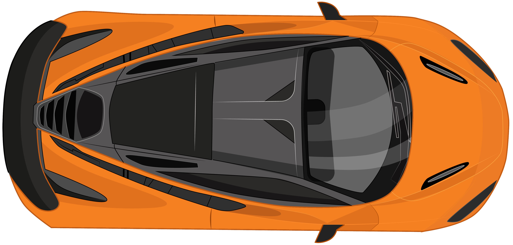

W E L C O M E I T Z F I Z Z
Glide the McLaren 720S across the kinetic proving ground. Physical momentum, continuous scrub interpolation, and real-time operational metrics.
Hub Network Routing
Autonomous locker and metro pickup node distribution absorbing peak corridor volume.
Support Queue Drop
Proactive dispatch telemetry resolving inquiry queries before manual support triggers.
Terminal Dispatch
Accelerated loading dock turnaround with synchronized dynamic carrier assignment.
Peak Route Throughput
Net operational SLA achievement and fuel sustainability across urban delivery routes.
Pick-Up Hub Adoption
Automated parcel lockers absorb high-density corridor loads with zero human queuing.
Inbound Call Reduction
Direct vehicle telemetry stream resolves customer parcel status before inquiry.
Fleet Dispatch Velocity
Accelerated transit turnaround with zero bottleneck idling at sorting docks.
Route SLA Efficiency
Comprehensive milestone completion and multi-point route sustainability gain.

Engineering Behind the Motion
Crafted without bloated animation dependencies. Powered by GSAP ScrollTrigger hardware-accelerated transforms, pre-cached spatial coordinates, and real-time procedural Web Audio synthesis.
Scroll-Bound Scrub Physics
The track section pins natively using GSAP ScrollTrigger (pin: true) across a 2,500px scroll distance, eliminating CSS sticky viewport desynchronization on mobile and web hosting platforms.
Spatial Letter Lighting
Each character coordinate within WELCOME ITZFIZZ is pre-calculated on layout refresh. As the vehicle's nose crosses each letter's X-axis, inline styles update with zero DOM reflows.
Procedural V8 Exhaust Audio
Zero external audio file overhead. Built with five Web Audio API oscillators (sawtooth firing, harmonic body, sub-bass thump, turbo whistle) and soft-clip wave distortion that dynamically tracks scroll velocity.